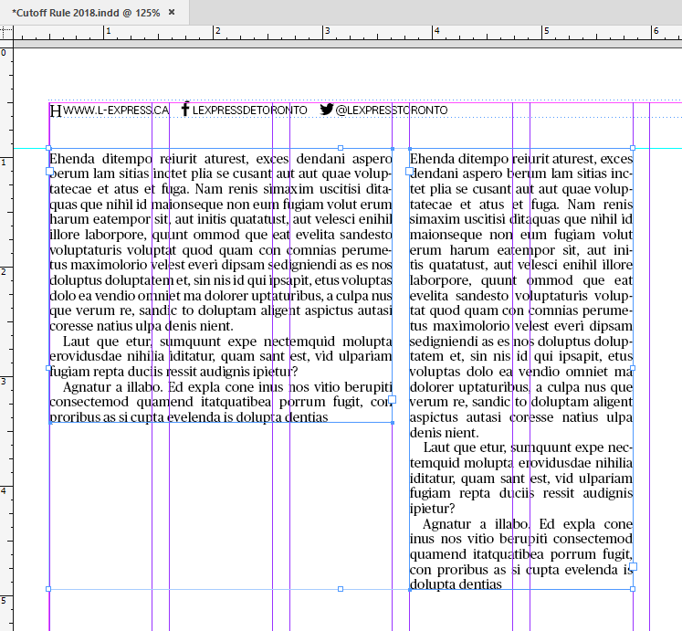
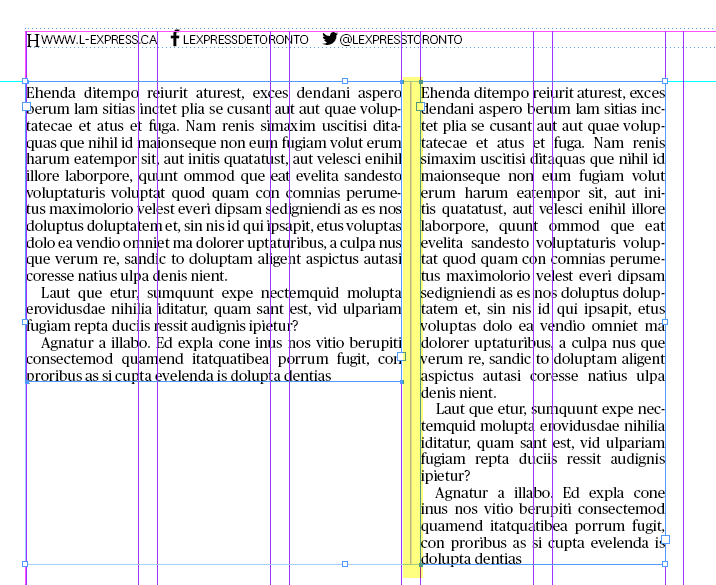

Cutoff rule
The original scenario (suggested by the client):
Cutoff rule horizontal
The goal is automatically place a Cutoff Rule horizontally to separate different items.
With one frame selected, script sets L of line = to the width of the frame script sets X of line = to X of the frame script sets Y of line = to Y of the frame plus 10 pts script applies 'cutoff rule' object style to the line.
With two frames selected, script inserts line script sets L of line = to the left edge of the frame furthest to the left and to the right edge of the frame furthest to the right script sets X of line = to the left edge of the frame furthest to the left script sets Y of line = 10 pts above the top of the frame that is highest of the two frames script applies 'cutoff rule' object style to the line.
Cutoff rule vertical
The goal is automatically place a Cutoff Rule vertically to separate different items.
With one or more frames selected, script sets L of line = to the height of the frame script sets Y of line = to Y of the frame
setting X coordinate (see InDesign document for examples):
a) If frame is on left hand page, and if frame is closer to the outside of the page than to the spine of the page, then script sets X of line = to right side of the frame and plus 0.0783 inches to the right
b) If frame is on left hand page, and if frame is closer to the spine of the page than the outside of the page, then script sets X of line = to left side of the frame and minus 0.0783 inches to the left
c) If frame is on right hand page, and if frame is closer to the spine of the page than the outside of the page, then script sets X of line = to right side of the frame and plus 0.0783 in to the right
d) If frame is on right hand page, and if frame is closer to the outside of the page than to the spine of the page, then script sets X of line = to left side of the frame and minus 0.0783 inches to the left
script applies 'cutoff rule' object style to the line.
With two frames selected, script inserts line script sets L of line = to the top of the highest frame to the bottom of the lowest frame script sets Y of line = to the top of the frame that is highest of the two frames script sets X of line = to between the two frames script applies 'cutoff rule' object style to the line.
With one or more frames and a line selected, script sets L of line = to the top of the highest frame to the bottom of the lowest frame script sets Y of line = to the top of the frame that is highest of the two frames script applies 'cutoff rule' object style to the line.
The final implementation:
All the job is done by the main script — Cutoff rule.jsx — which is triggered by two other small scripts using the doScript() command which sends the only argument: verticalRule. In Vertical.jsx script it is set to true, and Horizontal.jsx to false. That’s the one and only difference between them. All three scripts should be located in the same folder.
In this way, I don’t have to write and maintain two or more almost identical scripts. I just can run it from a number of small scripts sending the necessary parameter. Quite an elegant solution in my opinion!
Before

After

Click here to download the script.
Go back to the main Scripts for L'Express de Toronto Inc. page